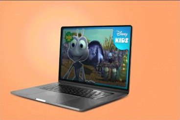

2025 – now · YouTube · Thumbnails & optimisation
YouTube thumbnails & optimisation for entertainment brands
Thumbnail Specialist at The Polar Bears · for Disney Kids, MasterChef World TV, Banijay and Cineflix
2.4M
views in 28 days on MasterChef World TV, well above the channel's usual 0.8M–1.4M range.
The context
The Polar Bears is a UK agency that manages and grows YouTube channels for entertainment brands. On YouTube, a video's thumbnail and title decide whether it gets watched at all, so every asset has a direct effect on reach.
My role
I design thumbnails and write titles, descriptions and metadata for channels including Disney Kids, MasterChef World TV, Banijay and Cineflix, keeping each channel visually consistent while testing what drives clicks.
The result
During the period shown, MasterChef World TV reached 2.4M views in 28 days (948K more than usual), with 603K hours of watch time and 4.1K new subscribers, driven largely by YouTube recommendations.


